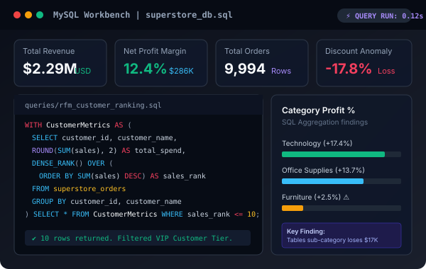

Project Visual Preview

assets/images/
1. Project Overview & Objective
Commercial retail operations generate large volumes of sales transactions across different regions, customer categories, and product lines. Understanding which product segments generate consistent revenue and tracking regional demand is critical for inventory and marketing strategy.
2. Database Structure & Analytical Queries
Structured MySQL queries were authored to answer core business questions:
- Data Ingestion & Types: Imported transactional records into MySQL, verifying correct column data types for currency, quantities, and dates.
- Aggregations & Grouping: Leveraged
SUM(),AVG(),COUNT(), andGROUP BYclauses to calculate total revenue by category and region. - Filtering & Sorting: Used
HAVINGandORDER BYstatements to highlight top-performing products and evaluate customer purchasing trends.
3. Sample SQL Queries
Below is an example SQL query used to analyze sales performance across product categories and regions:
-- Total Sales and Order Count by Product Category and Region
SELECT
region,
category,
COUNT(DISTINCT order_id) AS total_orders,
ROUND(SUM(sales), 2) AS total_sales,
ROUND(AVG(sales), 2) AS avg_order_value
FROM superstore_sales
GROUP BY region, category
ORDER BY total_sales DESC;
-- Top Selling Products Query
SELECT
product_name,
category,
SUM(quantity) AS total_units_sold,
ROUND(SUM(sales), 2) AS total_revenue
FROM superstore_sales
GROUP BY product_name, category
ORDER BY total_revenue DESC
LIMIT 10;4. Key Findings & Sales Insights
Summary of analytical discoveries uncovered through MySQL queries:
Category Revenue Leaders
[Insert your finding: e.g., Identified the top revenue-driving product categories across multi-year sales transactions.]
Regional Demand Variations
[Insert your finding: e.g., Evaluated geographic regions with consistent purchasing volume vs. regions with emerging demand.]
Order Value Patterns
[Insert your finding: e.g., Analyzed average order sizes across customer segments to assess bulk purchasing trends.]
5. Data-Driven Takeaways
- Inventory Alignment: [Insert recommendation: e.g., Maintain stock priority for high-turnover product categories.]
- Regional Focus: [Insert recommendation: e.g., Target promotional campaigns towards regions demonstrating strong category affinity.]
- Query Optimization: Indexing key transaction attributes (such as
order_dateandcategory) speeds up recurring reporting queries.